À propos de Crapette Pro
La Crapette, le jeu de cartes classique, sur iPhone et iPad
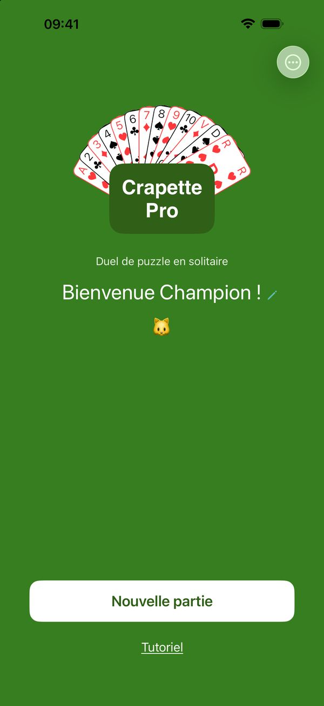
La Crapette que vous connaissez. Forgée dans la fournaise de la compétition.
Vous connaissez la Crapette : le premier qui se débarrasse de ses cartes gagne. Elle est là, telle quelle, au niveau Classique.
Pour exercer l'observation et la réflexion, les niveaux suivants ajoutent peu à peu des règles plus exigeantes. À chaque coup, ces règles composent un puzzle : le réussir vous évite une Crapette !, les résoudre tous, c'est viser les meilleurs scores.
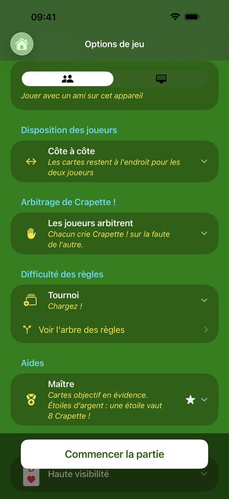
Composez votre partie idéale.
Six adversaires : quelqu'un en face de vous, sur le même appareil, avec le choix de l'arbitrage ; ou l'ordinateur, de l'Écuyer, qui se trompe souvent, à l'Algorithme, qui ne se trompe jamais.
Six niveaux de règles, du jeu officiel jusqu'à Ultime✦.
Trois niveaux d'aide : moins vous êtes aidé, plus les étoiles gagnées sont précieuses et difficiles à obtenir.
Soit 6 × 6 × 3 = 108 modes de jeu.
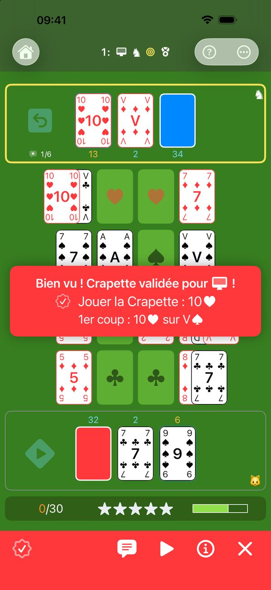
Un ordinateur qui se trompe — exprès.
L'Écuyer, le Chevalier et le Roi commettent des fautes, souvent, parfois ou rarement : à vous de les repérer et de crier Crapette !, comme face à un vrai joueur. Et quand vous voulez souffler, l'Algorithme ne se trompe jamais : regardez-le jouer.
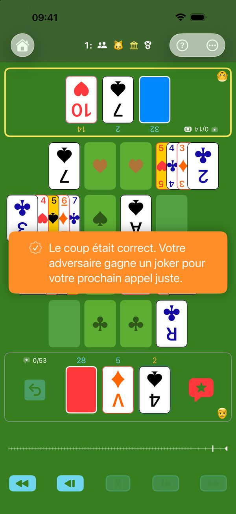
Face à face, sans dispute.
Deux joueurs, un seul appareil posé entre vous, le plateau tourné vers chacun. Repérez la faute de l'autre et criez Crapette ! : l'ordinateur vérifie, sans discussion possible — ou arbitre seul, si vous préférez. Mais attention : un faux appel offre un joker à votre adversaire.
Petits-enfants à l'œil vif, grands-parents à l'expérience sûre : tout le monde à armes égales.
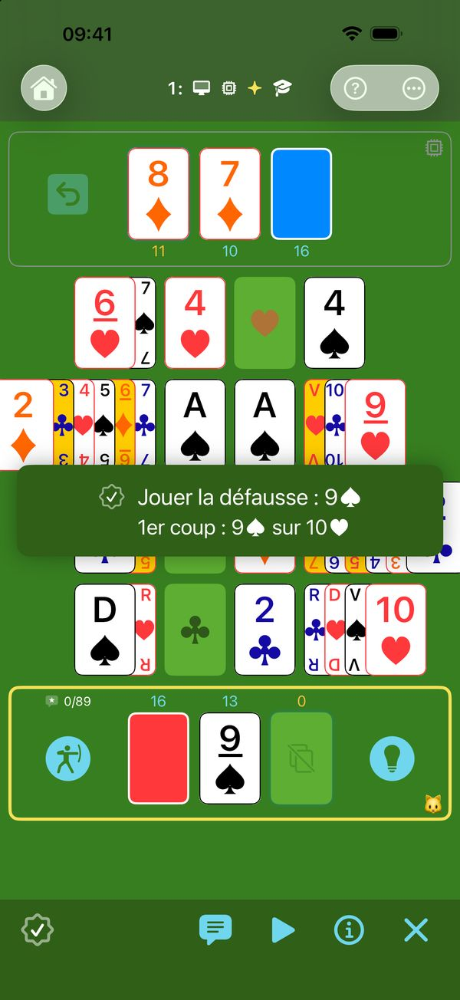
Chaque coup est un puzzle.
Au niveau Classique, presque tous les coups sont permis. À chaque niveau, une règle de plus réduit le nombre de coups autorisés, jusqu'à ne laisser que le meilleur chemin. Chaque coup devient un puzzle : à vous d'en trouver la solution.
- Classique : la Crapette traditionnelle, avec ses deux règles officielles — le centre en un coup, la Crapette avant la pioche.
- Club : amener au centre toute carte qui peut l'atteindre.
- Tournoi : charger la Crapette de l'adversaire.
- Professionnel : libérer le plus de rangées possible.
- Ultime : réaliser l'objectif prioritaire en un minimum de coups.
- Ultime✦ : entre deux chemins aussi courts, prendre celui qui respecte aussi les règles de priorité inférieure.
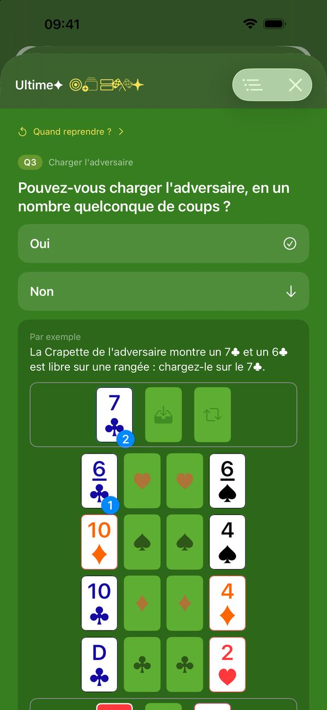
Chaque coup s'explique.
Chaque Crapette ! reçue, chaque indice demandé vous montre le coup à jouer — et la règle qui l'impose.
L'arbre des règles montre comment elles se complètent : une question à la fois, dans l'ordre de votre niveau, jusqu'au coup juste.
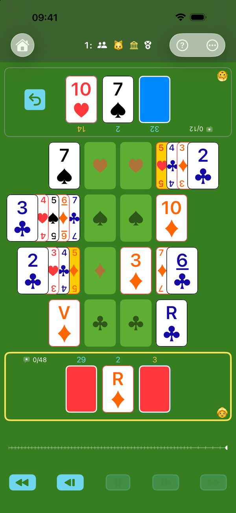
Fait travailler le cerveau, sainement, à tout âge.
Observer, réfléchir, optimiser votre coup parmi ceux possibles : chaque partie fait travailler la tête. Sans chrono, vous prenez le temps de penser, et la difficulté se règle à votre mesure. Le tout en jouant : on s'exerce sans s'en rendre compte.
Le jeu qu'un parent peut proposer à son enfant : de la réflexion, pas d'effets clignotants, pas d'addiction. Les parties demandent un vrai effort : après une ou deux, les enfants filent jouer dehors.
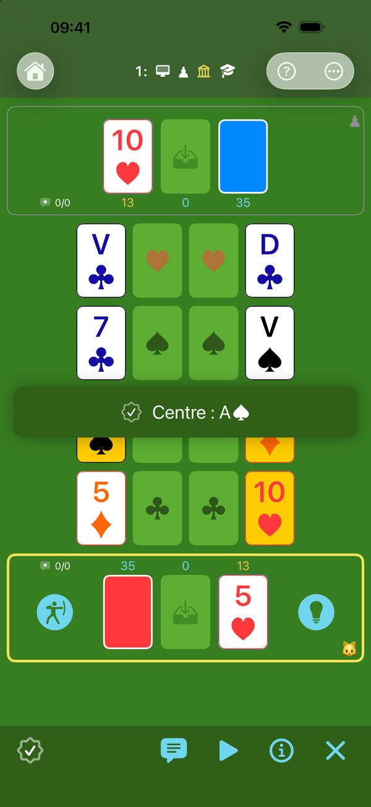
Le terrain d'entraînement. Ici, le but est d'apprendre.
Commencez au niveau Classique, en Étudiant, avec toutes les aides. Les cartes objectifs montrent les buts possibles. L'indice vous montre l'objectif prioritaire et le premier coup pour l'atteindre. Le meilleur coup, lui, se joue pour vous. Un doute sur un bouton ? Touchez « ? » : chaque élément du plateau s'explique. Aiguisez votre sens tactique sur le terrain d'entraînement.
Comme une épée d'entraînement en bois, Oups ! vous permet d'encaisser des coups sans trop souffrir : vous rejouez votre coup, mais la faute, elle, reste comptée.
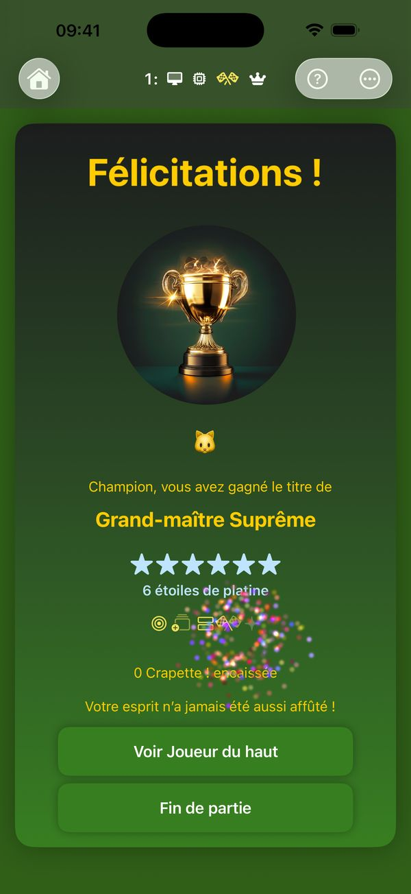
Vos progrès, en grades et en étoiles.
Le score est là pour vous motiver et mesurer votre progression. Gagnez des grades de plus en plus prestigieux et de précieuses étoiles.
La récompense ultime : le platine de la partie sans fautes.
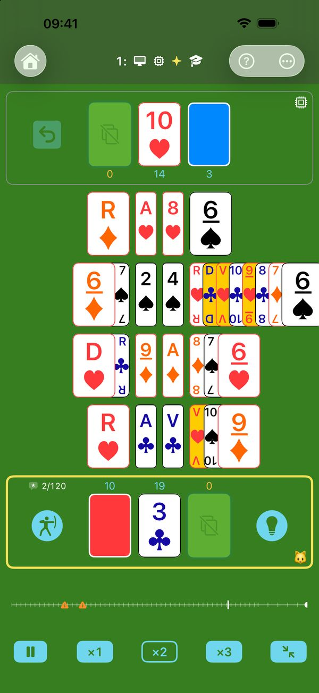
Une arène sous les projecteurs, pour ne perdre aucun détail.
Un jeu conçu pour être lisible : même grand-mère n'aura plus d'excuse.
Choisissez votre jeu de cartes : standard, haute visibilité, ou haute visibilité aux quatre coins. Quatre enseignes aux couleurs et aux formes bien distinctes : tout reste lisible, même sur un petit écran.
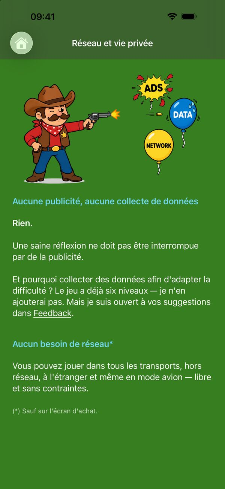
Un jeu taillé comme un athlète.
- Vif : en un temps très court, le moteur sait si votre coup est le bon.
- Léger : une dizaine de Mo, téléchargé en un instant.
- Autonome : aucun réseau nécessaire pour jouer (sauf au moment de l'achat, bien sûr).
- Discret : le jeu ne collecte aucune donnée.
- Sans publicité : une saine réflexion ne doit pas être interrompue.
- Sans addiction : ni notification, ni série à entretenir, aucune obligation de jouer. Vous revenez quand vous en avez envie.
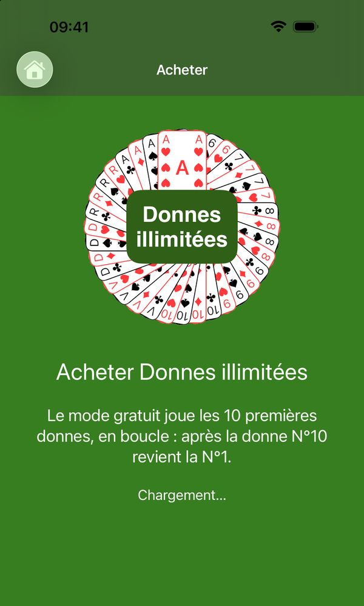
Le bac à sable illimité.
Pas d'abonnement. Tout le jeu s'essaie gratuitement, sans limite de temps — tous les niveaux, tous les adversaires, toutes les aides. Faites autant de pâtés que vous voulez, mais sur les dix premières donnes, qui reviennent en boucle.
Un achat unique ouvre des donnes nouvelles à l'infini.
Une question, un bug, une suggestion ? La page d’assistance répond aux questions fréquentes et donne mon adresse e-mail.